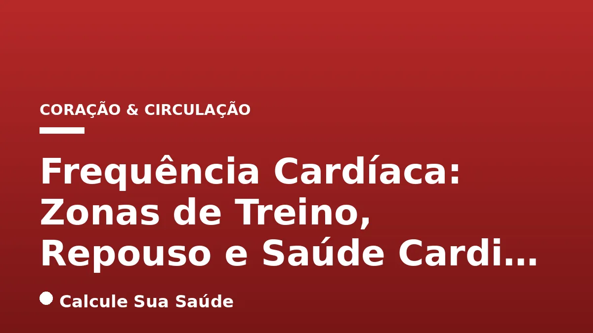

Aviso médico importante
Este conteúdo é educativo e informativo e não substitui a consulta, o diagnóstico ou o tratamento de um profissional de saúde. Em caso de sintomas, procure orientação médica.
Índice do Artigo
- 1. O Coração em Números: Entendendo a Frequência Cardíaca
- 2. Frequência Cardíaca de Repouso (FCR): Um Espelho da Saúde Cardíaca
- 3. Como Medir Sua Frequência Cardíaca de Repouso Corretamente
- 4. Frequência Cardíaca Máxima (FCM): O Limite do Esforço
- 5. As Zonas de Treinamento Cardíaco: Otimizando Seu Exercício
- 6. Detalhando as 5 Zonas de Treinamento: Benefícios e Aplicações
- 7. Fatores que Influenciam a Frequência Cardíaca: Além do Exercício
- 8. Alterações da Frequência Cardíaca: Taquicardia e Bradicardia
- 9. Sinais de Alerta: Quando a Frequência Cardíaca Anormal Demanda Atenção Médica
- 10. Causas e Fatores de Risco para Arritmias e Doenças Cardiovasculares
- 11. Diagnóstico de Alterações Cardíacas: Ferramentas e Procedimentos
- 12. Prevenção de Doenças Cardiovasculares: O Poder do Estilo de Vida
- 13. Abordagens Terapêuticas para Arritmias Cardíacas
- 14. Desvendando Mitos sobre a Frequência Cardíaca e a Saúde do Coração
- 15. O Cenário Epidemiológico no Brasil: Doenças Cardiovasculares
- 16. Conclusão: A Importância do Monitoramento e Cuidado Contínuo
- 17. Perguntas frequentes
A frequência cardíaca (FC) é um dos indicadores mais fundamentais da saúde cardiovascular, revelando o número de vezes que o coração se contrai por minuto (bpm). Longe de ser um valor estático, a FC é um reflexo dinâmico das necessidades do nosso organismo, ajustando-se continuamente a uma miríade de fatores, desde a intensidade da atividade física até o estado emocional, o sono e a alimentação. Compreender a sua FC, tanto em repouso quanto durante o esforço, é uma ferramenta poderosa para monitorar a saúde do coração e otimizar o desempenho físico.
Este artigo aprofundará os conceitos essenciais da frequência cardíaca, explorando o que é considerado um ritmo saudável, como medir com precisão e, crucialmente, como utilizar as zonas de treinamento para guiar seus exercícios. Abordaremos as causas e os fatores de risco para alterações na FC, os sintomas que demandam atenção médica e as abordagens diagnósticas e terapêuticas baseadas em evidências científicas.
Nosso objetivo é fornecer um guia completo e cientificamente embasado, capacitando você a entender melhor o seu coração e a tomar decisões informadas para promover uma vida mais longa e saudável. Lembre-se, contudo, que as informações aqui apresentadas têm caráter educativo e não substituem a consulta e o acompanhamento de um profissional de saúde qualificado.
Em resumo
- A frequência cardíaca (FC) é o número de batimentos por minuto e um indicador vital da saúde cardiovascular, variando com atividade, emoções e sono.
- A Frequência Cardíaca de Repouso (FCR) normal para adultos varia entre 60-100 bpm, podendo ser mais baixa em atletas bem condicionados (40-60 bpm).
- A Frequência Cardíaca Máxima (FCM) pode ser estimada pela fórmula 220 - idade, e é crucial para definir as zonas de treino.
- As zonas de treinamento (50-100% da FCM) guiam a intensidade do exercício, otimizando a recuperação, resistência e performance.
- Alterações como taquicardia (>100 bpm) ou bradicardia (<60 bpm) em repouso podem ser normais ou indicar condições médicas que exigem avaliação.
- Um estilo de vida saudável, com alimentação balanceada, atividade física regular e controle do estresse, é fundamental para prevenir doenças cardiovasculares.
1. O Coração em Números: Entendendo a Frequência Cardíaca
A frequência cardíaca (FC) representa o número de vezes que o coração se contrai e bombeia sangue por minuto. Este é um dos sinais vitais mais importantes do corpo humano, atuando como um barômetro da saúde cardiovascular e da capacidade do organismo de se adaptar a diferentes demandas. O coração é um órgão incrivelmente dinâmico, e sua frequência de batimentos não é constante; ela se ajusta continuamente em resposta a uma vasta gama de estímulos internos e externos.
Desde o momento em que acordamos até o sono profundo, passando por momentos de estresse, alegria, atividade física intensa ou repouso, a FC se modifica para garantir que o corpo receba o suprimento adequado de oxigênio e nutrientes. Compreender as variações normais e anormais da frequência cardíaca é fundamental para a manutenção da saúde, a otimização do desempenho atlético e a identificação precoce de possíveis problemas de saúde.
2. Frequência Cardíaca de Repouso (FCR): Um Espelho da Saúde Cardíaca
A Frequência Cardíaca de Repouso (FCR) é o número de batimentos cardíacos por minuto quando o corpo está em completo repouso, sem estresse físico ou emocional. Para a maioria dos adultos saudáveis, a FCR é geralmente considerada normal entre 60 e 100 batimentos por minuto (bpm). Contudo, é importante notar que diretrizes de entidades como a Sociedade Brasileira de Cardiologia (SBC) também consideram uma faixa de normalidade entre 50 e 99 bpm para adultos em vigília, refletindo uma flexibilidade na interpretação desses valores.
Uma FCR mais baixa, especialmente entre 40 e 60 bpm, é frequentemente observada em atletas bem condicionados. Isso não é motivo de preocupação, mas sim um indicativo de um coração mais forte e eficiente. Um coração atlético consegue bombear uma quantidade maior de sangue a cada batimento, necessitando de menos contrações para realizar o mesmo trabalho, o que se traduz em uma FCR reduzida e uma melhor saúde cardiovascular geral. Por outro lado, uma FCR persistentemente elevada pode sinalizar um esforço excessivo do coração ou a presença de condições subjacentes que demandam investigação.
| Faixa de Frequência Cardíaca de Repouso (FCR) | Interpretação |
|---|---|
| 40-60 bpm | Excelente (comum em atletas bem condicionados) |
| 60-100 bpm | Normal para a maioria dos adultos saudáveis |
| 50-99 bpm | Faixa de normalidade segundo algumas diretrizes |
| >100 bpm | Taquicardia (pode ser normal ou indicar problema) |
| <60 bpm | Bradicardia (pode ser normal ou indicar problema) |
3. Como Medir Sua Frequência Cardíaca de Repouso Corretamente
A medição precisa da FCR é crucial para obter um indicador confiável da sua saúde cardiovascular. O momento ideal para aferir a FCR é pela manhã, logo após acordar e antes de se levantar, tomar café ou iniciar qualquer atividade. Se isso não for possível, pode-se medir após um período de 10 a 15 minutos de repouso, sentado confortavelmente em um ambiente tranquilo, evitando o consumo de cafeína, exercícios ou situações de estresse antes da aferição.
Métodos de Medição
- Manual no Pulso (Artéria Radial): Coloque os dedos indicador e médio no pulso, na base do polegar. Conte os batimentos por 15 segundos e multiplique o resultado por quatro para obter a FCR em bpm.
- Manual no Pescoço (Artéria Carótida): Posicione os mesmos dedos ao lado da traqueia, abaixo do maxilar. Conte os batimentos por 15 segundos e multiplique por quatro. É importante não pressionar ambas as artérias carótidas simultaneamente, pois isso pode causar tontura ou desmaio.
- Dispositivos Eletrônicos: Smartwatches, monitores cardíacos de peito e oxímetros de pulso são ferramentas convenientes que oferecem medições contínuas ou pontuais da FC. Embora práticos, é importante verificar a calibração e a precisão desses dispositivos, especialmente se houver preocupações médicas.
A regularidade na medição e o registro dos valores podem ajudar a identificar tendências e a monitorar a eficácia de mudanças no estilo de vida ou tratamentos.
4. Frequência Cardíaca Máxima (FCM): O Limite do Esforço
A Frequência Cardíaca Máxima (FCM) representa o número mais alto de batimentos que o coração pode atingir durante um esforço físico intenso. Este valor é um parâmetro fundamental para o planejamento de treinos, pois serve como base para o cálculo das zonas de treinamento. Conhecer a sua FCM permite que você personalize a intensidade dos exercícios, garantindo que esteja treinando de forma eficaz e segura.
Cálculo e Medição da FCM
- Fórmula de Predição (220 - idade): A maneira mais comum e amplamente utilizada para estimar a FCM é subtrair a sua idade de 220. Por exemplo, uma pessoa de 30 anos teria uma FCM estimada de 190 bpm (220 - 30). Embora seja uma estimativa prática, é importante reconhecer que essa fórmula pode não ser precisa para todos, pois a FCM varia individualmente.
- Outras Fórmulas: Existem outras fórmulas de predição que podem oferecer estimativas ligeiramente diferentes, como a de Inbar (205,8 - 0,685 × idade) ou a de Tanaka, Monahan e Seals. Essas alternativas buscam refinar a estimativa, mas ainda são generalizações.
- Teste de Esforço Clínico: Para uma determinação mais precisa e clinicamente validada da FCM, um teste de esforço máximo é recomendado. Realizado em ambiente laboratorial, sob supervisão de um cardiologista ou fisiologista do exercício, este teste envolve o uso de esteira ou bicicleta ergométrica para levar o indivíduo ao seu limite de esforço, monitorando a FC e outros parâmetros cardíacos. Este método é o mais seguro e preciso, especialmente para indivíduos com condições de saúde preexistentes ou que buscam otimização de performance.
É relevante destacar que o sexo não é um fator que influencia o cálculo da FCM de forma significativa nas fórmulas de predição, mas características individuais como o tamanho corporal podem ter alguma correlação, com pessoas menores tendendo a ter uma FCM ligeiramente mais alta.
5. As Zonas de Treinamento Cardíaco: Otimizando Seu Exercício
As zonas de treinamento são intervalos específicos de intensidade de exercício, definidos por porcentagens da sua Frequência Cardíaca Máxima (FCM). Elas representam uma ferramenta valiosa para atletas e praticantes de atividade física, permitindo monitorar e controlar a intensidade do treino de forma objetiva. Ao treinar dentro de uma zona específica, é possível focar em diferentes objetivos fisiológicos, como melhora da resistência, queima de gordura, aumento da velocidade ou recuperação muscular.
O uso das zonas de treinamento ajuda a evitar o subtreinamento (quando o esforço não é suficiente para gerar adaptações significativas) e o supertreinamento (que pode levar à fadiga, lesões e esgotamento). A zona alvo para exercícios de intensidade moderada a vigorosa, geralmente recomendada para a saúde cardiovascular geral, situa-se entre 50% e 85% da FCM. Essa faixa é eficaz para fortalecer o coração e melhorar a capacidade aeróbica sem sobrecarregar o sistema.
Para calcular suas zonas, primeiro determine sua FCM (usando a fórmula 220 - idade ou um teste de esforço). Em seguida, multiplique sua FCM pelas porcentagens correspondentes a cada zona. Por exemplo, se sua FCM é 180 bpm, a Zona 2 (60-70%) seria entre 108 bpm (180 x 0,60) e 126 bpm (180 x 0,70).
| Zona | % da FCM | Intensidade | Benefícios |
|---|---|---|---|
| 1 | 50-60% | Recuperação | Aquecimento, desaquecimento, recuperação ativa, melhora da circulação. |
| 2 | 60-70% | Base Aeróbica | Treino de resistência, consumo eficaz de energia, queima de gordura. |
| 3 | 70-80% | Aeróbica Intensa | Melhora da capacidade aeróbica, "zona cinza" (cuidado com excesso). |
| 4 | 80-90% | Limiar | Aumento de velocidade, capacidade de manter ritmo elevado, melhora do limiar de lactato. |
| 5 | 90-100% | Máxima | Desempenho máximo, treino anaeróbico de alta intensidade e curta duração. |
6. Detalhando as 5 Zonas de Treinamento: Benefícios e Aplicações
Cada uma das cinco zonas de treinamento cardíaco possui objetivos e benefícios fisiológicos distintos, permitindo uma abordagem estratégica para o condicionamento físico:
Zona 1: Recuperação (50-60% da FCM)
Esta é a zona de menor intensidade, ideal para aquecimento antes de um treino mais intenso, desaquecimento ao final da sessão ou para dias de recuperação ativa. O ritmo é tranquilo, permitindo uma conversa fácil. Os principais benefícios incluem a melhora da circulação sanguínea, o auxílio na remoção de subprodutos metabólicos dos músculos e a aceleração da recuperação muscular, preparando o corpo para o próximo esforço.
Zona 2: Base Aeróbica (60-70% da FCM)
Considerada a zona fundamental para o desenvolvimento da resistência cardiovascular, a Zona 2 envolve sessões leves e aeróbicas. Nela, o corpo se torna mais eficiente no uso de gordura como fonte de energia, poupando os estoques de glicogênio. É excelente para treinos de longa duração e para construir uma base sólida de condicionamento físico, melhorando a capacidade do coração de bombear sangue e dos músculos de utilizar oxigênio.
Zona 3: Aeróbica Intensa (70-80% da FCM)
Conhecida por alguns como a "zona cinza", esta faixa de intensidade é útil para melhorar a capacidade aeróbica e a resistência em ritmos mais elevados. O esforço é perceptível, mas ainda é possível manter uma conversa curta. Treinar nesta zona pode aumentar a capacidade do corpo de transportar e utilizar oxigênio. No entanto, deve ser usada com cautela para evitar o excesso de treinamento, que pode levar à fadiga e estagnação.
Zona 4: Limiar (80-90% da FCM)
Esta zona representa um treino mais intenso, onde o corpo começa a produzir ácido lático em um ritmo mais rápido do que consegue eliminá-lo. O objetivo principal é melhorar a velocidade e a capacidade de manter um ritmo elevado por períodos mais longos. Treinos nesta zona são desafiadores e geralmente são realizados em intervalos curtos, visando aumentar o limiar de lactato e a performance em competições.
Zona 5: Máxima (90-100% da FCM)
A Zona 5 é o ápice da intensidade, caracterizada por exercício anaeróbico em intervalos curtos e de alta intensidade. É projetada para produzir o desempenho máximo em explosões rápidas, como sprints. O esforço é exaustivo e insustentável por longos períodos. Treinar nesta zona melhora a potência, a velocidade e a capacidade anaeróbica, mas exige um alto nível de condicionamento e deve ser feito com moderação e sob orientação profissional para minimizar riscos.
7. Fatores que Influenciam a Frequência Cardíaca: Além do Exercício
A frequência cardíaca não é um valor fixo e pode ser influenciada por uma complexa interação de fatores internos e externos. Compreender essas variáveis é essencial para interpretar corretamente as medições da FC e identificar quando uma alteração pode ser um sinal de alerta.
- Idade e Nível de Condicionamento Físico: A idade é um dos principais determinantes da FCM, que diminui progressivamente com o passar dos anos. O nível de condicionamento físico também é crucial; indivíduos mais treinados tendem a ter uma FCR mais baixa.
- Estado Emocional: Emoções intensas como estresse, ansiedade, medo, raiva ou até mesmo grande felicidade podem ativar o sistema nervoso simpático, resultando em um aumento temporário da FC. O estresse crônico, por exemplo, pode manter a FC elevada, impactando a saúde cardiovascular a longo prazo. Para mais informações sobre como o estado emocional afeta a saúde, veja nosso artigo sobre Depressão: Sintomas, Causas, Tipos e Tratamentos.
- Uso de Medicamentos: Diversos medicamentos podem afetar a FC. Betabloqueadores, por exemplo, são frequentemente prescritos para reduzir a FC, enquanto outros, como alguns descongestionantes, podem aumentá-la.
- Temperatura e Umidade Ambiente: Em ambientes quentes e úmidos, o coração precisa trabalhar mais para resfriar o corpo, o que pode levar a um aumento da FC.
- Posição do Corpo: A FC pode ser ligeiramente mais baixa quando se está deitado e mais alta ao se levantar, devido às mudanças na gravidade e no retorno venoso.
- Tamanho Corporal: Embora não seja uma regra rígida, pessoas com maior massa corporal podem ter uma FC de repouso ligeiramente mais alta.
- Qualidade do Sono: A privação de sono ou um sono de má qualidade pode levar a um aumento da FC de repouso e a uma maior reatividade do sistema cardiovascular.
Esses fatores demonstram a complexidade da FC como um indicador e a importância de considerar o contexto ao avaliá-la.
8. Alterações da Frequência Cardíaca: Taquicardia e Bradicardia
Embora a frequência cardíaca seja naturalmente variável, desvios significativos dos padrões normais em repouso podem indicar condições que requerem atenção médica. As duas principais alterações são a taquicardia e a bradicardia.
Taquicardia: Coração Acelerado
A taquicardia é caracterizada por uma frequência cardíaca acima de 100 batimentos por minuto (bpm) em repouso. É uma resposta fisiológica normal ao exercício físico intenso, estresse, febre ou ansiedade. No entanto, quando ocorre sem uma causa aparente ou é persistente, pode ser um sinal de uma condição subjacente que exige investigação. Existem vários tipos de taquicardia, cada um com suas características e origens:
- Fibrilação Atrial: Um ritmo cardíaco irregular e frequentemente rápido, originado nos átrios.
- Flutter Atrial: Um ritmo atrial rápido e regular, mas anormal.
- Taquicardia Ventricular: Um ritmo cardíaco rápido e potencialmente perigoso, originado nos ventrículos.
- Taquicardia Supraventricular: Um termo geral para ritmos rápidos que se originam acima dos ventrículos.
Para aprofundar-se nos diferentes tipos de arritmias e seus sintomas, consulte nosso artigo sobre Arritmia Cardíaca: Tipos, Sintomas e Quando Se Preocupar.
Bradicardia: Coração Lento
A bradicardia é definida como uma frequência cardíaca abaixo de 60 bpm em repouso, embora alguns especialistas considerem abaixo de 50 bpm como o limiar para preocupação. Assim como a taquicardia, a bradicardia pode ser uma condição normal em certas circunstâncias. Por exemplo, atletas de elite frequentemente apresentam FCRs entre 40 e 60 bpm devido à eficiência de seus corações. Durante o sono profundo, a FC também pode diminuir significativamente sem indicar problemas de saúde. Contudo, se a bradicardia for acompanhada de sintomas como tontura, fadiga ou desmaios, ela pode ser um sinal de disfunção do sistema elétrico do coração ou de outras condições médicas.
É fundamental que qualquer alteração persistente ou sintomática na frequência cardíaca seja avaliada por um médico para um diagnóstico preciso e um plano de tratamento adequado.
9. Sinais de Alerta: Quando a Frequência Cardíaca Anormal Demanda Atenção Médica
Embora a frequência cardíaca possa variar naturalmente, certos sintomas associados a alterações na FC devem ser prontamente avaliados por um profissional de saúde. Ignorar esses sinais pode atrasar o diagnóstico e o tratamento de condições cardíacas potencialmente graves. É crucial estar atento ao seu corpo e procurar ajuda médica se experimentar qualquer um dos seguintes sintomas, especialmente se forem novos, persistentes ou graves:
- Palpitações: Sensação de que o coração está batendo forte, acelerado, pulando batidas ou descompassado. Pode ser descrita como um "galope" no peito.
- Dor ou Desconforto no Peito: Uma sensação de aperto, pressão, queimação ou dor no centro do peito, que pode se irradiar para os braços, pescoço, mandíbula ou costas.
- Falta de Ar (Dispneia): Dificuldade para respirar, especialmente durante atividades leves ou em repouso, ou uma sensação de "fome de ar".
- Tontura, Vertigem ou Desmaio (Síncope): Sensação de desequilíbrio, cabeça leve ou perda temporária da consciência. Estes podem indicar que o cérebro não está recebendo sangue suficiente.
- Fadiga Extrema ou Fraqueza Inexplicável: Cansaço persistente e desproporcional ao nível de atividade, que não melhora com o repouso.
- Inchaço nas Pernas ou Tornozelos (Edema): Acúmulo de líquido nas extremidades inferiores, que pode ser um sinal de insuficiência cardíaca.
- Confusão Mental: Dificuldade de concentração, desorientação ou alterações no estado mental.
- Pressão Baixa (Hipotensão): Uma queda significativa na pressão arterial, que pode estar associada a uma FC anormal.
- Pele Fria e Pálida: Sinal de má perfusão sanguínea, onde o sangue não está circulando adequadamente para a pele.
A presença de um ou mais desses sintomas, especialmente em conjunto com uma FC anormal (muito rápida ou muito lenta), justifica uma avaliação médica imediata. O diagnóstico precoce pode fazer uma diferença significativa no prognóstico e na qualidade de vida.
10. Causas e Fatores de Risco para Arritmias e Doenças Cardiovasculares
As alterações na frequência cardíaca e o desenvolvimento de doenças cardiovasculares são multifatoriais, resultando da interação entre predisposições genéticas, condições de saúde preexistentes e escolhas de estilo de vida. Reconhecer esses fatores é o primeiro passo para a prevenção e o manejo eficaz.
Condições Médicas e Doenças
- Doenças Cardíacas Estruturais: Problemas congênitos, infartos anteriores que danificaram o músculo cardíaco, miocardites (inflamação do músculo cardíaco) e doenças do sistema de condução elétrico do coração podem levar a arritmias.
- Distúrbios Metabólicos: Condições como hipotireoidismo (baixa função da tireoide), hiperpotassemia (excesso de potássio), hipoxemia (baixo oxigênio no sangue), hipotermia (baixa temperatura corporal) e hipoglicemia (baixo açúcar no sangue) podem desestabilizar o ritmo cardíaco.
- Medicamentos: Certos fármacos, incluindo betabloqueadores, digoxina e alguns antiarrítmicos (classes I e III), podem afetar a FC e o ritmo cardíaco.
- Condições Crônicas: Hipertensão arterial (pressão alta), diabetes, colesterol elevado, anemia e outras doenças da tireoide são fatores de risco significativos para o desenvolvimento de arritmias e outras doenças cardiovasculares.
- Outros: Fortes emoções, disfunções autonômicas (como hipersensibilidade do seio carotídeo e síncope vasovagal) e doenças infecciosas ou inflamatórias (como a cardiopatia chagásica) também podem desencadear alterações na FC.
Fatores de Estilo de Vida
- Estresse Crônico e Sono Irregular: Ambos podem levar à ativação prolongada do sistema nervoso simpático, elevando a FC e a pressão arterial.
- Sedentarismo: A falta de atividade física regular enfraquece o coração e o sistema cardiovascular.
- Tabagismo e Consumo Excessivo de Álcool: São fatores de risco bem estabelecidos para uma série de doenças cardíacas e arritmias.
- Obesidade: Aumenta a carga de trabalho do coração e está associada a outros fatores de risco metabólicos.
Fatores Não Modificáveis
Idade, sexo e genética (histórico familiar de doenças cardíacas) são fatores que não podem ser alterados, mas que devem ser considerados na avaliação do risco individual.
11. Diagnóstico de Alterações Cardíacas: Ferramentas e Procedimentos
O diagnóstico de alterações na frequência cardíaca e de arritmias cardíacas é um processo abrangente que começa com uma avaliação detalhada do histórico médico do paciente, seus hábitos de vida e os sintomas relatados. A partir daí, uma série de exames complementares pode ser solicitada para monitorar a atividade elétrica do coração e identificar a natureza de qualquer irregularidade.
Principais Métodos Diagnósticos
- Eletrocardiograma (ECG): É um exame rápido e não invasivo que registra a atividade elétrica do coração. O ECG pode detectar ritmos cardíacos anormais, danos ao músculo cardíaco e outras condições. É frequentemente o primeiro exame realizado quando há suspeita de problemas cardíacos.
- Holter de 24 a 48 Horas (ou Mais): Para pacientes cujos sintomas são intermitentes ou esporádicos, o Holter é um dispositivo portátil que registra continuamente a atividade elétrica do coração por um período prolongado (geralmente 24 a 48 horas, mas pode ser estendido). Isso permite capturar arritmias que podem não aparecer em um ECG de rotina.
- Teste Ergométrico (Teste de Esforço): Este exame avalia como o coração responde ao estresse físico. O paciente caminha em uma esteira ou pedala em uma bicicleta ergométrica enquanto a FC, a pressão arterial e o ECG são monitorados. É útil para diagnosticar arritmias induzidas pelo exercício ou para avaliar a capacidade funcional do coração.
- Estudo Eletrofisiológico (EEF): Em casos de taquicardias complexas ou quando outros exames não são conclusivos, um EEF pode ser realizado. Este procedimento invasivo envolve a inserção de cateteres finos através de vasos sanguíneos até o coração para mapear detalhadamente a atividade elétrica e identificar o foco exato da arritmia. É frequentemente o passo inicial para procedimentos como a ablação por cateter.
A escolha do exame dependerá dos sintomas do paciente, do histórico médico e da suspeita clínica do cardiologista. A combinação de informações clínicas e resultados de exames permite um diagnóstico preciso e a elaboração de um plano de tratamento individualizado.
12. Prevenção de Doenças Cardiovasculares: O Poder do Estilo de Vida
A boa notícia é que a vasta maioria dos fatores de risco para doenças cardiovasculares são modificáveis. A adoção de um estilo de vida saudável é a estratégia mais eficaz e baseada em evidências para prevenir alterações na frequência cardíaca e outras condições cardíacas. Pequenas mudanças diárias podem ter um impacto significativo na saúde do seu coração a longo prazo.
Pilares da Prevenção
- Alimentação Balanceada: Uma dieta rica em frutas, vegetais, grãos integrais, peixes (especialmente os ricos em ômega-3) e gorduras saudáveis (como as encontradas em abacate e azeite de oliva) é fundamental. Reduza o consumo de alimentos processados, açúcares adicionados, gorduras saturadas e sódio. Para entender os riscos de certos alimentos, leia sobre Alimentos Ultraprocessados: Riscos e Identificação.
- Prática Regular de Atividade Física: O exercício é um dos maiores aliados do coração. Recomenda-se pelo menos 150 minutos de exercícios de intensidade moderada por semana, como caminhada rápida, natação, ciclismo ou dança. Atividades que aumentam a frequência cardíaca fortalecem o músculo cardíaco e melhoram a circulação. Exercícios de força, como musculação e pilates, também são benéficos para a saúde geral e cardiovascular. Para dicas sobre como começar, veja Caminhada: Benefícios para a Saúde e Quantos Passos Diários.
- Controle do Estresse: O estresse crônico pode elevar a FC e a pressão arterial. Técnicas de relaxamento como meditação, yoga, exercícios de respiração profunda e hobbies prazerosos podem ajudar a gerenciar o estresse e promover o bem-estar cardiovascular.
- Sono Adequado: Dormir de 7 a 8 horas por noite é vital para a recuperação do corpo e do coração. A privação de sono está associada a um risco aumentado de hipertensão, obesidade e diabetes, todos fatores de risco para doenças cardíacas.
- Evitar Fumo e Álcool em Excesso: Parar de fumar é uma das decisões mais importantes para a saúde do coração. O consumo excessivo de álcool também prejudica o sistema cardiovascular e deve ser moderado ou evitado.
- Acompanhamento Médico e Exames Periódicos: Consultas regulares com um médico são essenciais para monitorar indicadores importantes como pressão arterial, níveis de colesterol, triglicerídeos e glicemia. O diagnóstico precoce e o manejo de condições como hipertensão e diabetes são cruciais para a prevenção de doenças cardíacas.
13. Abordagens Terapêuticas para Arritmias Cardíacas
O tratamento das arritmias cardíacas é altamente individualizado, dependendo do tipo específico da arritmia, sua gravidade, a presença de sintomas e se há instabilidade hemodinâmica (comprometimento da circulação sanguínea). O objetivo principal é restaurar o ritmo cardíaco normal, controlar a frequência ventricular e prevenir complicações graves, como o acidente vascular cerebral ou a insuficiência cardíaca.
Opções de Tratamento
- Medicamentos Antiarrítmicos: Uma variedade de medicamentos pode ser prescrita para controlar os batimentos do coração. Eles atuam de diferentes formas, seja diminuindo a excitabilidade das células cardíacas, prolongando o período refratário ou bloqueando certos receptores. A escolha do medicamento depende do tipo de arritmia e das condições de saúde do paciente.
- Cardioversão Elétrica: Este procedimento é realizado em ambiente hospitalar, sob sedação. Consiste na aplicação de um choque elétrico controlado no tórax do paciente, com o objetivo de "resetar" o sistema elétrico do coração e restaurar um ritmo cardíaco normal. É frequentemente utilizado em arritmias agudas que causam instabilidade hemodinâmica.
- Ablação por Cateter: Uma técnica minimamente invasiva, realizada durante um estudo eletrofisiológico. Cateteres são inseridos em vasos sanguíneos e guiados até o coração para identificar e cauterizar (destruir controladamente por calor ou frio) as células cardíacas responsáveis pela origem ou propagação da arritmia. É uma opção eficaz para muitos tipos de taquicardias, especialmente quando o tratamento medicamentoso não é satisfatório ou o paciente busca uma solução mais definitiva.
- Marca-passo: Para casos de bradicardia sintomática ou bloqueios cardíacos, um marca-passo pode ser implantado. Este pequeno dispositivo eletrônico emite impulsos elétricos para auxiliar o coração a manter um ritmo regular e adequado, garantindo que o sangue seja bombeado eficientemente para o corpo.
- Cardioversor Desfibrilador Implantável (CDI): Semelhante ao marca-passo, o CDI é um dispositivo implantável que atua na prevenção de paradas cardíacas em pacientes com alto risco de arritmias ventriculares graves e potencialmente fatais. Ele monitora continuamente o ritmo cardíaco e, se detectar uma arritmia perigosa, emite um choque elétrico controlado para restaurar o ritmo normal, agindo como um "desfibrilador interno".
A decisão sobre qual tratamento é mais adequado deve ser sempre tomada em conjunto com um cardiologista ou arritmologista, após uma avaliação completa do quadro clínico.
14. Desvendando Mitos sobre a Frequência Cardíaca e a Saúde do Coração
No campo da saúde cardiovascular, muitos mitos persistem, gerando desinformação e, por vezes, preocupações desnecessárias ou negligência de sinais importantes. É fundamental basear-se em evidências científicas para uma compreensão correta da frequência cardíaca e da saúde do coração.
Mitos Comuns e a Realidade Científica
- Mito: Pressão arterial e frequência cardíaca estão sempre conectadas.
Ciência: Embora ambas sejam medidas vitais e possam ser influenciadas pelos mesmos fatores (como estresse ou exercício), elas não estão sempre diretamente conectadas. É possível ter uma pressão arterial normal com uma FC elevada, ou vice-versa, dependendo da causa subjacente. - Mito: Pressão baixa e frequência cardíaca baixa sempre indicam problemas.
Ciência: Nem sempre. Em atletas bem condicionados, uma FCR baixa (40-60 bpm) é um sinal de boa saúde e eficiência cardíaca. Durante o sono profundo, a FC também pode ser mais baixa sem indicar problemas. No entanto, se acompanhada de sintomas como tontura, fadiga ou desmaio, deve-se procurar um médico, pois pode ser um sinal de bradicardia patológica. - Mito: A morte súbita só pode ocorrer em atletas ou em situações extremas.
Ciência: Grande parte dos casos de morte súbita ocorre em pessoas que já possuíam algum problema cardíaco identificado, sofreram episódios de ataque cardíaco ou têm riscos associados ao histórico familiar, independentemente de gênero e idade. Atletas podem ter condições cardíacas congênitas não diagnosticadas, mas a morte súbita não é exclusiva deles. - Mito: Quem tem arritmia cardíaca não pode praticar esportes.
Ciência: Atualmente, com diversas abordagens de tratamentos e acompanhamentos médicos, muitos pacientes com arritmia podem levar uma vida tranquila e praticar esportes. As modalidades e os limites das atividades físicas devem ser definidos por um cardiologista, que avaliará o tipo de arritmia e o risco individual. - Mito: Arritmias cardíacas sempre são malignas.
Ciência: Existem arritmias cardíacas benignas (que não representam risco grave à vida) e malignas (que podem ser perigosas). A necessidade de tratamento é determinada por um cardiologista, arritmologista ou eletrofisiologista após uma avaliação detalhada e individualizada. - Mito: Praticar desporto prejudica o coração.
Ciência: Pelo contrário, o exercício físico regular é extremamente benéfico para o coração. Embora o exercício eleve o ritmo cardíaco temporariamente, ele melhora o perfil de colesterol, a tensão arterial e fortalece o músculo cardíaco. A prática deve ser gradual, diversificada e adaptada à condição física do indivíduo, idealmente com orientação profissional.
15. O Cenário Epidemiológico no Brasil: Doenças Cardiovasculares
As doenças cardiovasculares (DCV) representam um dos maiores desafios de saúde pública no Brasil e em escala global. A magnitude do problema é alarmante, com dados que sublinham a urgência de medidas preventivas e de conscientização.
No Brasil, as DCV são a principal causa de morte, sendo responsáveis por aproximadamente 30% de todos os óbitos no país. Essa estatística se traduz em uma perda de vida humana a cada 90 segundos devido a alguma condição cardíaca, um número que ressalta a importância de entender e cuidar da saúde do coração.
Historicamente, as doenças do coração eram frequentemente associadas a homens, mas a realidade epidemiológica revela um cenário diferente. As doenças cardiovasculares são, na verdade, a principal causa de morte entre as mulheres em todo o mundo, superando inclusive o câncer de mama. No Brasil, dados do Ministério da Saúde indicam que cerca de 30% das mortes femininas têm origem cardiovascular, um percentual idêntico ao da população geral.
O risco feminino é, muitas vezes, subestimado, tanto pelas próprias mulheres quanto por profissionais de saúde, o que pode levar a atrasos no diagnóstico e no início do tratamento. Essa demora contribui para a maior gravidade dos eventos cardiovasculares em mulheres, que frequentemente apresentam sintomas atípicos ou menos reconhecíveis. A conscientização sobre esses dados é crucial para promover uma abordagem mais equitativa e eficaz na prevenção e tratamento das DCV em ambos os sexos.
16. Conclusão: A Importância do Monitoramento e Cuidado Contínuo
A frequência cardíaca é muito mais do que um simples número; é um indicador vital e dinâmico que reflete a saúde e a capacidade de adaptação do nosso coração. Compreender os conceitos de FCR, FCM e as zonas de treinamento capacita cada indivíduo a monitorar seu próprio corpo, otimizar seus exercícios e identificar potenciais sinais de alerta que demandam atenção médica.
A saúde cardiovascular é um pilar fundamental para uma vida longa e plena. As doenças do coração, embora prevalentes, são em grande parte preveníveis através da adoção de um estilo de vida saudável, que inclui alimentação balanceada, atividade física regular, controle do estresse e sono adequado. A prevenção é a melhor estratégia, e o conhecimento é a ferramenta mais poderosa para alcançá-la.
Lembramos que este artigo tem caráter informativo e educativo. Qualquer preocupação com sua frequência cardíaca ou sintomas relacionados deve ser discutida com um médico. O acompanhamento profissional é insubstituível para um diagnóstico preciso e um plano de tratamento personalizado, garantindo que seu coração continue batendo forte e saudável por muitos anos.
17. Perguntas frequentes
Qual é a frequência cardíaca de repouso considerada normal para um adulto?
Para a maioria dos adultos saudáveis, a Frequência Cardíaca de Repouso (FCR) normal varia entre 60 e 100 batimentos por minuto (bpm). No entanto, algumas diretrizes consideram uma faixa de normalidade entre 50 e 99 bpm. Atletas bem condicionados podem ter uma FCR ainda mais baixa, entre 40 e 60 bpm, o que é um sinal de boa saúde cardiovascular.
Como posso calcular minha Frequência Cardíaca Máxima (FCM)?
A forma mais comum de estimar a Frequência Cardíaca Máxima (FCM) é pela fórmula 220 menos a sua idade. Por exemplo, se você tem 40 anos, sua FCM estimada seria 180 bpm (220 - 40). Para uma medição mais precisa, um teste de esforço máximo supervisionado por um cardiologista é recomendado.
O que são as zonas de treinamento e para que servem?
As zonas de treinamento são intervalos de intensidade de exercício baseados em porcentagens da sua Frequência Cardíaca Máxima (FCM). Elas servem para guiar a intensidade do seu treino, permitindo que você atinja objetivos específicos, como melhorar a resistência, queimar gordura, otimizar a recuperação ou aumentar a performance em alta intensidade.
Quando devo me preocupar com uma frequência cardíaca muito alta ou muito baixa?
Você deve se preocupar se sua frequência cardíaca em repouso estiver persistentemente acima de 100 bpm (taquicardia) ou abaixo de 60 bpm (bradicardia) e for acompanhada de sintomas como tontura, falta de ar, dor no peito, desmaios ou fadiga extrema. Nessas situações, procure um médico para avaliação.
O exercício físico pode prejudicar o coração?
Não, pelo contrário. O exercício físico regular fortalece o coração, melhora o colesterol e a pressão arterial, e aumenta a eficiência cardiovascular. A prática deve ser gradual, diversificada e adaptada à sua condição física, idealmente com orientação profissional, para maximizar os benefícios e minimizar riscos.
A frequência cardíaca é diferente para homens e mulheres?
O sexo não influencia diretamente o cálculo da Frequência Cardíaca Máxima (FCM) nas fórmulas de predição. No entanto, a Frequência Cardíaca de Repouso (FCR) pode ter pequenas variações individuais, e fatores como o tamanho corporal podem ter alguma correlação, com pessoas menores tendendo a ter uma FCM ligeiramente mais alta.
Quais hábitos de vida ajudam a manter uma frequência cardíaca saudável?
Manter uma frequência cardíaca saudável envolve uma alimentação balanceada (rica em frutas, vegetais e grãos integrais), prática regular de atividade física, controle do estresse, sono adequado (7-8 horas por noite), evitar o tabagismo e o consumo excessivo de álcool, e realizar exames médicos periódicos para monitorar a saúde cardiovascular.
Arritmias cardíacas são sempre perigosas?
Não. Existem arritmias cardíacas benignas, que não representam risco grave à vida, e arritmias malignas, que podem ser perigosas. A necessidade de tratamento e o nível de preocupação são determinados por um cardiologista após uma avaliação detalhada do tipo de arritmia e do estado de saúde geral do paciente.
Leia também
Referências e Fontes
1. Hospital São Lucas Copacabana. "Batimento cardíaco normal por idade: qual o seu?". Disponível em: vertexaisearch.cloud.google.com
2. Dra. Ana Luiza Moreno. "Qual é a frequência cardíaca normal? Veja valores por idade e quando se preocupar". Publicado em 15/07/2026, atualizado em 24/07/2026. Disponível em: rededorsaoluiz.com.br
3. Rede Américas. "Qual o normal dos batimentos cardíacos e como monitorar". Disponível em: vertexaisearch.cloud.google.com
4. Mayo Clinic. "Heart rate: What's normal?". Disponível em: vertexaisearch.cloud.google.com
5. Iguana Sports. "Conheça as 5 zonas de treinamento e como usá-las a seu favor". Disponível em: iguanasports.com.br
6. Rede D'Or São Luiz. "Qual é a frequência cardíaca normal? Veja valores por idade e quando se preocupar". Disponível em: rededorsaoluiz.com.br
7. DASA. "Frequência cardíaca". Disponível em: nav.dasa.com.br
8. Telemedicina Morsch. "Frequência cardíaca". Disponível em: telemedicinamorsch.com.br